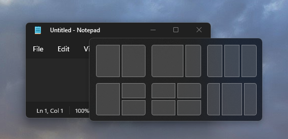

Support snap layouts for desktop apps on Windows 11
Snap layouts are a new Windows 11 feature to help introduce users to the power of window snapping. Snap layouts are easily accessible by hovering the mouse over a window's maximize button or pressing Win + Z. After invoking the menu that shows the available layouts, users can click on a zone in a layout to snap a window to that particular zone and then use Snap Assist to finish building an entire layout of windows. Snap layouts are tailored to the current screen size and orientation, including support for three side-by-side windows on large landscape screens and top/bottom stacked windows on portrait screens.

If the app's window has the maximize caption button available, the system will automatically show snap layouts when a user hovers the mouse over the window's maximize button. Snap layouts will appear automatically for most apps, but some desktop apps may not show snap layouts. This topic describes how to make sure your app shows the menu with snap layouts if the system does not show it automatically.
Why doesn't my app show the snap layouts menu?
If your app's main window has the maximize caption button available but does not show snap layouts, it may be because you've customized your caption buttons or title bar in a way that prevents it.
How do I fix it?
If you have a custom title bar, then you can:
Use the Windows App SDK windowing APIs (see Manage app windows) and have the platform draw and implement the caption buttons for you.
For Win32 apps, make sure you are responding appropriately to WM_NCHITTEST (with a return value of
HTMAXBUTTONfor the maximize/restore button).LRESULT CALLBACK TestWndProc(HWND window, UINT msg, WPARAM wParam, LPARAM lParam) { switch (msg) { case WM_NCHITTEST: { // Get the point in screen coordinates. // GET_X_LPARAM and GET_Y_LPARAM are defined in windowsx.h POINT point = { GET_X_LPARAM(lParam), GET_Y_LPARAM(lParam) }; // Map the point to client coordinates. ::MapWindowPoints(nullptr, window, &point, 1); // If the point is in your maximize button then return HTMAXBUTTON if (::PtInRect(&m_maximizeButtonRect, point)) { return HTMAXBUTTON; } } break; } return ::DefWindowProcW(window, msg, wParam, lParam); }If your app uses Electron, update to the v13 stable release of Electron to enable snap layouts.
What if my app's window shows snap layouts but isn't snapping properly?
If your app can invoke the menu with snap layouts but isn't able to snap properly to the zone sizes, it's likely that your app's minimum window size is too large for the window to fit in the selected zone.
Your app should support a minimum width of at most 500 effective pixels (epx) to support snap layouts across the most common screen sizes. However, we recommend that you support an even smaller minimum width (330 epx or less) so that it's compatible with a larger set of devices and snap layouts.